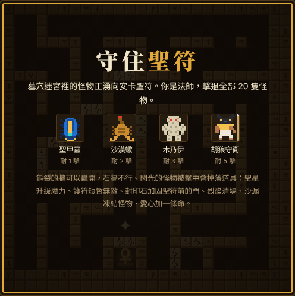
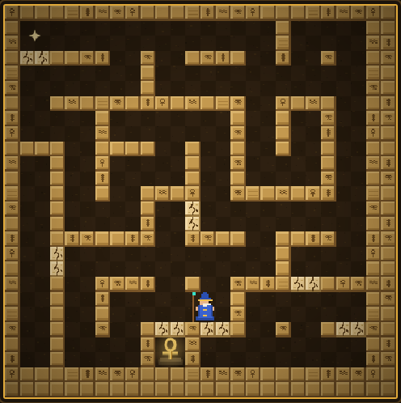
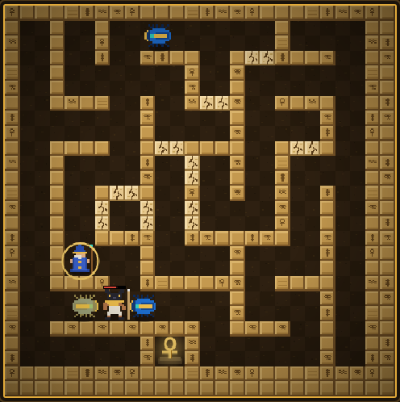
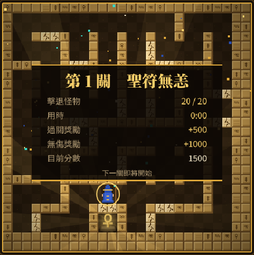
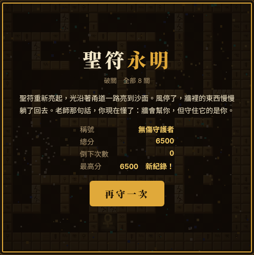

聖符守衛戰
埃及墓穴迷宮射擊遊戲 電腦、手機打開就能玩

遊戲內的開場介紹：四種怪物與它們的耐擊數。每次進入，迷宮都不一樣。
遊戲簡介
你是最後一位守墓法師，要在每次都不同的墓穴迷宮裡，用魔法彈擊退 20 隻怪物，守住最深處的安卡聖符。
怪物有的追著你跑，有的直攻墓室深處的聖符，聖符一碎就輸。不用安裝，打開網頁就能玩。
開場故事：沙下的火
尼羅河西岸的沙下，埋著一座沒有名字的陵墓。陵墓最深處供著一枚安卡聖符。傳說它是第一位守墓人留下的，只要它還亮著，墓裡的東西就醒不過來。
今年，盜墓的人鑿開了外牆。風灌進甬道，吹動沙子，也吹醒了牆裡的東西。聖甲蟲先爬出來，接著是藏在沙裡的蠍，再來是裹著亞麻布的木乃伊。最後出現的，是拖著長矛的胡狼首守衛。
它們不是來守墓的。它們要砸碎聖符，換一個新主人。
你是最後一位守墓法師。老師留給你一根杖、一件舊袍，還有一句話：「牆會幫你，但別全靠牆。」迷宮的石牆是舊日設下的，擋得住怪物，也擋得住你。只有龜裂的那些牆，是老師當年留的後門。
聖符的小室只有一道封印門。門破了，火就滅了。
守住它。
操作方式
電腦用鍵盤，手機用畫面下方的方向盤和施法鈕。
法師會朝著自己面對的方向施法。想轉彎時，在岔路口按住方向，法師會自動轉進去。切換到別的視窗時，遊戲會自動暫停。
遊戲畫面示範

迷宮全景。左下法師，下方金色的就是安卡聖符。淡色帶裂紋的是可以打碎的牆。
 戰鬥中。聖甲蟲和胡狼守衛逼近，受傷的怪物頭上有紅色血條。
戰鬥中。聖甲蟲和胡狼守衛逼近，受傷的怪物頭上有紅色血條。

打中閃光的怪物，迷宮裡會掉出道具，走過去就能撿。

過關。彩紙飄落，結算本關成績與獎勵。

闖過 8 關就破關，會依倒下次數頒給稱號。
遊戲玩法
每一關要擊退 20 隻怪物，同時不讓安卡聖符被打中。聖符被打中，不管還剩幾條命，遊戲立刻結束。全部共 8 關，闖過第 8 關就破關。
- 迷宮：每一關都會產生一座新的隨機迷宮。你出生在聖符小室門前的房間，聖符在迷宮最下方。
- 石牆：刻著象形文字的沙岩牆，擋得住所有魔法彈，打不破。
- 龜裂的牆：顏色較淡、帶裂紋。魔法彈一碰就整段碎掉，可以當捷徑。怪物的彈也打得碎它。
- 封印門：聖符小室只有一道門，平常是龜裂的牆。怪物會朝它開火，門一破，聖符就暴露了。
- 怪物的行為：有的追著你跑，有的直奔聖符門口。場上同時最多 4 隻，第 3 關起增加到 5 隻，第 5 關起 6 隻。
- 生命：開局 3 條命。被怪物的彈打到會掉一條命，魔力歸零，隔一下在聖符門前重生，並有幾秒護盾。
- 關卡：擊退 20 隻就過關，共 8 關。後面的關卡，木乃伊和胡狼守衛變多，怪物也逐關加快，最多快三成。
怪物圖鑑
四種怪物的防禦力不同，從一發就倒到要打五發。
怪物的出場順序是隨機的。越後面的關卡，木乃伊和胡狼守衛越多。
道具
每一關有三隻怪物會閃光。打中閃光的怪物，迷宮裡某個房間就會掉出一個道具，走過去就能撿。道具約 12 秒後消失，快消失時會閃爍。場上同時只有一個道具。
撿到任何道具都加 500 分。
計分與過關、失敗條件
計分
- 聖甲蟲 100 分、沙漠蠍 200 分、木乃伊 300 分、胡狼守衛 500 分
- 撿到道具 +500 分
- 過關獎勵：關卡數 × 500 分；無傷過關另加 1000 分
- 最高分會存在你的瀏覽器裡，下次打開還在
過關：把這一關的 20 隻怪物全部消滅，畫面會灑下彩紙並結算：過關獎勵是「關卡數 × 500」分，整關沒有倒下過，再加 1000 分無傷獎勵。接著進入下一關，越後面的關卡，怪物越多、越快。
破關：守住第 8 關，聖符永遠亮起。依整場倒下的次數頒發稱號：一次都沒倒下是「無傷守護者」，倒下 3 次以內是「聖符大祭司」，其餘是「守墓法師」。
失敗
- 聖符被怪物的魔法彈打碎，遊戲立刻結束
- 你的命用完（開場 3 條命），遊戲結束
被打倒時，你會在出生點重生，並有短暫的無敵時間。
新手小技巧
- 先守再攻。聖符是輸贏關鍵，不要跑太遠，怪物逼近聖符小室時馬上回防。
- 好好利用龜裂的牆。龜裂的牆可以打穿，也可以當掩護。打穿前先想想：這會不會替怪物開一條通往聖符的近路？
- 在轉角等怪物。怪物在房間之間移動，守在通道口，一出現就開火。
- 優先打閃光怪物。道具能救命，撿到立刻生效，而且約 12 秒就消失，看到就去撿。
- 護符和封印石最好在危急時撿。效果只有十幾秒，聖符小室快被攻破時撿到最划算。
- 聖星盡早撿。聖星的效果一直留到你倒下，越早升到 3 顆星，越好對付胡狼守衛。
- 注意胡狼守衛。要打 5 下才倒，不要硬碰硬，先拉開距離，邊退邊打。
常見問題
Q：手機可以玩嗎？
可以。畫面下方有虛擬方向盤和施法鈕，用手指操作即可。
Q：我的最高分會不見嗎？
最高分存在這台裝置的瀏覽器裡。換裝置、換瀏覽器，或清除瀏覽器資料，紀錄就會消失。
Q：怪物會從哪裡出現？
從迷宮外圍的出生點進場，之後在房間之間移動，朝聖符前進。
Q：可以把遊戲放到自己的網站嗎？
請先跟作者聯絡。
喜歡策略對弈？試試 神殿五子棋。